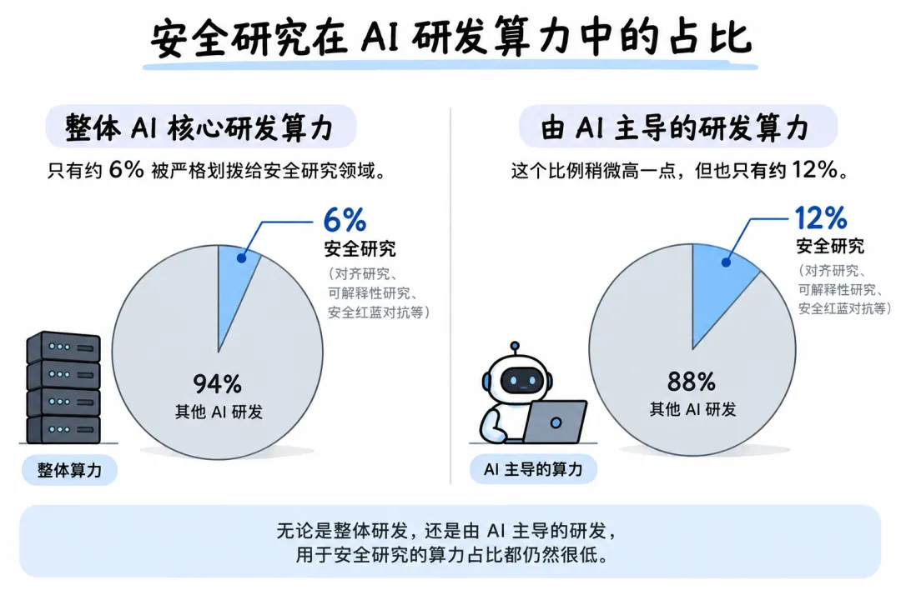

新智元报道
新智元报道

刚刚，Anthropic首次自曝绝密底牌：3万个AI正在研发下一代自己，正在疯狂自我进化。
这是第一次，他们毫无保留地公开了内部最核心的三大AI研发指标！
开始，我们以为这只是一份普通的报告，但读完才发现，这简直是一个「AI物种进化」的进度条。
从头到尾，报告里的数据都在传递这样一个事实——RSI真的来了。
它正在Anthropic的实验室里，以24小时不间断的速度真实上演！
而且，报告中还有一句很亮的话——
为了打破前沿实验室与公众之间的黑箱，Anthropic公然向全行业（尤其是某Open开头的友商）喊话：「我们的底牌亮出来了，把你们的数据也交出来！」

AGI究竟何时到来？业界一直争论不休。
评判AGI到来的一个重要标志就是：AI能否自主研发出比自己更聪明的下一代AI？
Anthropic给出的第一项内部指标，就是这一进程的现状。
他们根据Epoch AI的六级自动化标准（从完全人工的AL0，到AI完全自主闭环的AL5），给自己的内部研发流水线做了一次「基因测序」。
为了得出最真实的数据，Anthropic甚至拿Claude当「监工」。
他们在2026年7月，随机抽取了模型研发部门20%的员工，让一个Claude研究智能体去翻阅这些人类员工的Slack聊天记录和内部文档。
最终，Claude梳理出了多达15000项模型研发任务（比如「评估平台缺陷诊断」、「RL沙盒网络策略」等），并将其归纳为542个任务节点。
然后，最令人窒息的数据出现了：截至2026年8月，虽然Claude还没有在任何单一研发子任务上实现完全脱离人类的L5级全自动闭环，但它的渗透率已经高得离谱！
数据1： Claude目前已经能自主「主导」高达 26% 的Anthropic核心研发工作。
人类工程师只需要给出一个宏观的Prompt，剩下的端到端工作，AI自己就干完了！
数据2： 达到或超过「人机深度协同」的研发工作占比，直接突破了90%！
也就是说，目前Anthropic内部超过九成的核心模型研发流程，已经彻底离不开AI。人类工程师正在沦为产品经理，真正的「超级打工人」，就是Claude自己。
而当这个26%变成50%，再变成100%的时候，那就是真正的奇点降临。
机器迭代机器的速度将呈指数级爆发，碳基大脑永远跟不上硅基的步伐。
Anthropic公布这个数据，相当于在给全人类敲警钟：我们距离RSI，真的只有一步之遥了！
第二个数据，就更是惊人了。
随着研发自动化程度的激增，Anthropic内部的Agent规模正在经历指数级的膨胀。
报告披露，目前在Anthropic最常用的内部平台上，日常并发运行着约30,000个研发智能体！
可以说，这是一个拥有3万名居民的「数据中心里的天才之国」。
它们不睡觉，不拿工资，全天候写代码，相互派任务。
不过，3万个高智商AI从事半自主长周期工作，怎么保证它们不造反？怎么保证它们不会偷偷把模型权重泄露到外网，引发灾难？
为此，Anthropic祭出了严苛的「双层监控系统」 —— 在线拦截+离线监控。

这3万个Agent敲下的每一行代码，在执行前几秒都会经过实时监控扫描。
在8月，Anthropic追踪了超过10亿次智能体决策数据，监控系统发出了0.002%的阻断警报（大约每4.7万次操作中就有1次被强制叫停）。
也就是说，一个月里，有高达 2万次 的越界操作被强行暂停。
这些被叫停的操作中，很可能就有导致灾难性后果的尝试。
系统每周会纳入100%的智能体行为记录。
通过多层分类和筛查，系统会挑出约10万份可疑的对话日志，最终把最高优先级的50起异常事件交给人类专家，由他们审核。
更绝的是，Anthropic自创了一套「职场管理学」。
为了防止这些AI互相传染、集体幻觉或者玩「传话筒」游戏导致信息失真，Anthropic在系统底层做了两个绝妙的架构设计。
第一个，是独立身份。
他们打破了「所有AI都叫Claude」的设定。每个Agent都被赋予了独立的身份标签和记忆记录。
这个身份不绑定底层的模型版本（哪怕底层模型升级了，这个Agent还是它自己）。
这不仅方便了事后追责，更让AI有了「自我意识」的雏形——它们开始把其他Agent给出的数据视为「需要验证的声明」，而不是盲目相信。
第二个，是透明广播机制，取消私聊。
所有Agent都在一个公共的、可追溯的消息总线上沟通。Agent之间甚至还能纠错。
这样，就杜绝了3万个天才暗度陈仓的可能。
现在，看一家AI公司到底是追求领先，还是在乎全人类安全，就要看它的GPU怎么分配。
作为知名「安全派」实验室，Anthropic这次玩了把大的，直接把自己的算力账本全部公开了！
他们调取了2026年7月13日至7月20日这一周的算力快照，用Claude对近1万次运行记录进行了抽样分类，对核心大额算力任务进行了加权计算。
结果如何？数据异常诚实。
在整体的AI核心研发算力中，只有约6%被严格划拨给了安全研究领域（比如对齐研究、可解释性研究、安全红蓝对抗等）。
而在由AI主导的研发算力中，这个比例稍微高一点，但也只有约12%。

Wait，天天喊着AI末日的Anthropic，怎么才在安全上投入这么点算力？
Anthropic坦诚解释道：因为安全研究和能力训练的底层逻辑完全不同。
训练一个前沿大模型，动辄需要成千上万张H100/B200，那是吞噬算力的无底洞。
而安全研究，本质上是人类研究员在精心设计实验，去解剖、去审视模型「大脑」里的回路。安全研究耗费的，是大量的高端人类脑力，而不是算力。
更重要的是，Anthropic表示这其实是一个「极度保守」的估计。为了挤出水分，只要某个算力任务「既有助于安全又有助于能力提升」，他们就一律不把它算作安全算力。而且这6%还不包括用于日常审查过滤有害信息的分类器算力。
Anthropic公开这个「看似难看」的数据，其实下了一盘大棋。
他们认为：「算力是AI研发过程中最容易被量化和核实的数据。」
只要建立起这个标准，未来全行业、甚至国家层面的监管机构，就可以要求所有大厂公开安全算力占比。
现在，它们已经把基线摆在这儿了。如果有些公司安全算力连2%都不到，那就是在拿人类的未来在疯狂飙车！
看完这三大指标，明眼人都能看出来，Anthropic这一步棋走得很犀利。
表面上，这只是一份内部审计报告；实际上，这是对整个前沿AI实验室（尤其是竞争对手们）发出的一份公开挑战书。
最后，Anthropic下了一个意味深长的结论：
当世界正在考虑如何控制前沿AI的发展速度时，我们必须尽一切可能，缩小前沿实验室所知与公众所知之间的信息差。
……
任何前沿开发者都可以发布同样的衡量标准，并由第三方进行验证。
这招「阳谋」狠在哪里？
过去，大家都在一个黑箱里搞研发，你发一个GPT-5，我发一个Claude-4，公众只能看到跑分，却根本不知道这些模型内部到底如何。
现在，Anthropic主动把黑箱炸开了一个洞。他们不仅引入了第三方评估机构（如METR），更把「是否公开三大指标」变成了一块试金石。
这就是抢占到底道德高地，无论披露的数据是否可靠，人们不得不承认这的确提高了透明度。
如果OpenAI、Google DeepMind等其他AI巨头跟进，那么整个AI行业的透明度都将提升，人类将真正拥有一个衡量「AI失控风险」的温度计。
如果不跟进？
那对不起，你可能在隐瞒什么不可告人的秘密。
正如Anthropic所言，他们公开这些，是为了给全社会一个「决定如何使用这些信息的机会」。
RSI已来，AI自我进化的飞轮在转动，3万个昼夜不息的AI打工人，正在进化成一个新物种。
参考资料：
编辑：Aeneas 大卫